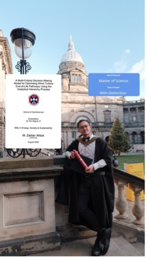
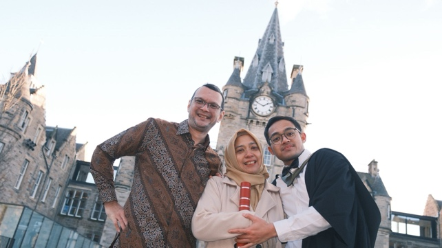
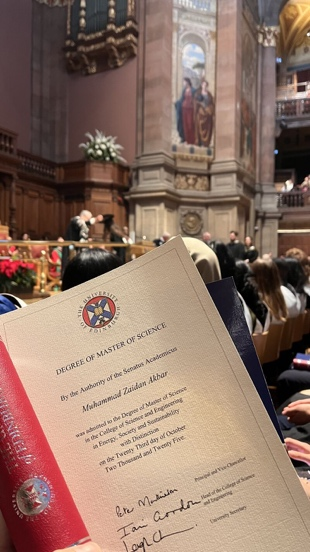
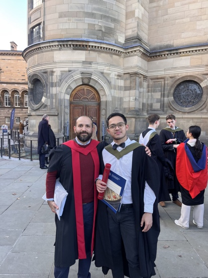

As I finished my Master's, I realised that what we do is not always about ourselves. Our life choices often ripple outward and deeply impact the people closest to us.

One thing is for sure: always ask, "What good impact am I bringing to my surroundings?"
This graduation is not for me, it is for my loving guardians, my parents, who always dreamed of having their children study abroad and becoming the first in our family to earn a Master's degree.
This moment is about them, their joy, and the happiness flowing through me and the rest of my family and friends.

The Ripple Effect
This interconnectedness — how every choice affects another — also mirrors the energy transition and the systemic changes happening around the world. Every decision creates webs of influence, chains of reactions, and countless domino effects.
The same applies to our personal lives. On this journey, I trusted my path even when it looked vague and uncertain. I pursued my Master's, worked part-time, took on renewable energy projects, and made the most of my time in the UK.

After 12 months of learning, unlearning, and growing — plus over 6 months with the Edinburgh Earth Initiative and then Constantine Wind Energy Ltd — my chapter in the UK is coming to an end as my student visa expires in January 2026.
It has truly been one of the most transformative, eye-opening, and inspiring experiences of my life.

A special thank-you to my lecturer, supervisor, and programme director of the MSc Energy, Society & Sustainability, Adolfo Mejia Montero — someone I'm proud to call a friend. He guided me through the toughest parts of this journey and helped me graduate with distinction.
Thank you to my loved ones, friends and family, who couldn't be here to celebrate in person, but whom I'll see again soon in Indonesia. I'm looking forward to warm hugs — and warm weather.
See you soon, Indonesia.